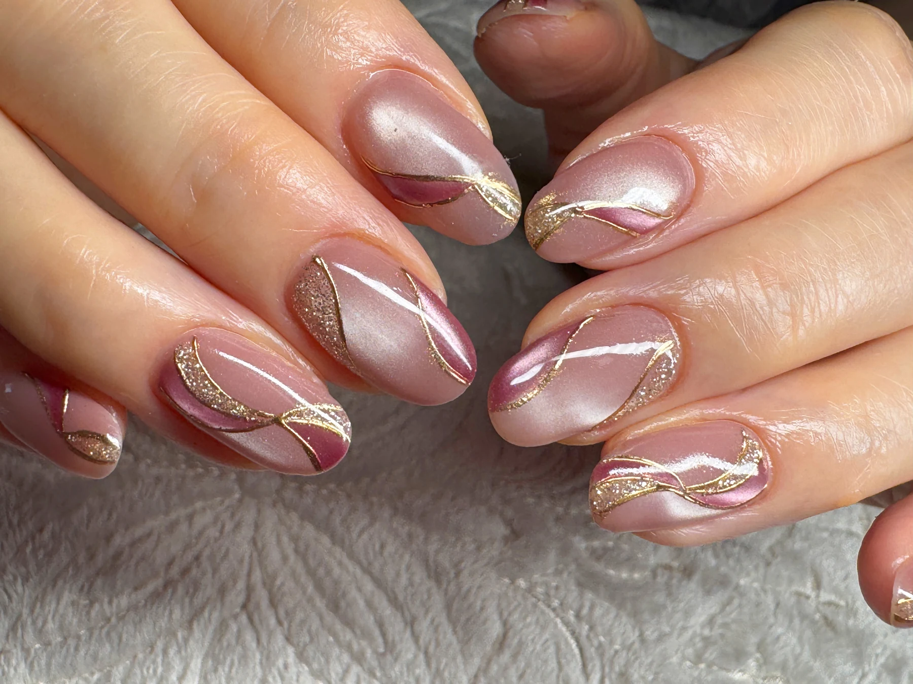

PRIVATE NAIL SALON
本八幡・京成八幡のプライベートネイルサロン
ふと目に入るたび、
うれしい指先。
好きな色。繊細な艶。私らしいデザイン。
心までほどける、あなただけのネイル時間を。
京成八幡駅 徒歩1分本八幡駅 徒歩5分

Beautiful nails,
just for you.
just for you.
A LITTLE BEAUTY IN YOUR EVERYDAY
01 OUR PHILOSOPHY
A little moment,
just for yourself.
指先を整える時間が、
自分を大切にする時間になる。
忙しい毎日の中で、ふと眺めたくなるネイル。
Kanamoがお届けしたいのは、そんな小さな喜びです。
マシンを使わず、すべてオールハンドで丁寧に。
お爪の形や状態を見ながら、細部まで確認して仕上げます。
JNA認定講師が担当完全個室女性専用・完全予約制
02 NAIL COLLECTION
今日の気分に、
似合うネイル。
さりげない上品さも、心ときめく華やかさも。
あなたの「好き」を見つけてください。
さりげなく、上品に。
指先に、小さな花を。
自分らしい、彩りを。
足元にも、ときめきを。
掲載写真はデザインの一例です。コースごとのデザインは公式カタログをご覧ください。
03 MENU & PRICE
選ぶ楽しさを、定額で。
表示価格は税込・Hot Pepper Beautyの全員向けクーポン料金です。


 YOUR PRIVATE SPACE
YOUR PRIVATE SPACE04 THE SALON
Make yourself
at home.
大きなソファで、
ゆっくり、ひと息。
ふかふかの大きなソファに身をゆだねて。
周りを気にせず、くつろぎながら
ネイル時間をお過ごしいただけます。
あなただけの、完全プライベート空間です。
サロンへのアクセスFOR YOUR FIRST VISIT
初めてのご来店も、
どうぞ気軽に。
色やデザイン、爪のお悩み。
気になることは、お聞かせください。
デザインを見つける
公式カタログで、気になるコースやデザインをチェック。
空き状況を確認・予約
Hot Pepperからご予約。亀裂補修や長さ出しは、ご予約時にお伝えください。
色や配置をご相談
定額デザインのカラー・配置変更も可能です。ご来店時にご案内します。
05 FIND US
駅からすぐの、
私だけのネイル時間。
Kanamo.
- サロン名
- Nail Salon Kanamo
ネイルサロン カナモ - 住所
- 千葉県市川市八幡2丁目2-11
メゾンクロシェット302 - 営業時間
- 10:00〜20:00 ／ 不定休
- ご案内
- 女性専用・完全予約制
- お支払い
- Visa・Mastercard・JCB・UnionPay（銀聯）・PayPay
YOUR NEXT LITTLE HAPPINESS
次のときめきを、
指先から。
お気に入りのネイルで、日常に小さな喜びを。
空き状況を見て予約するHOT PEPPER Beauty の予約ページへ